1Відкрийте SpreadRadar
Перейдіть на сайт:
https://spreadradar.net
Натисніть кнопку «Увійти через Telegram».
У вікні Telegram введіть номер телефону, на який зареєстрований ваш Telegram-акаунт, і натисніть «Далі».
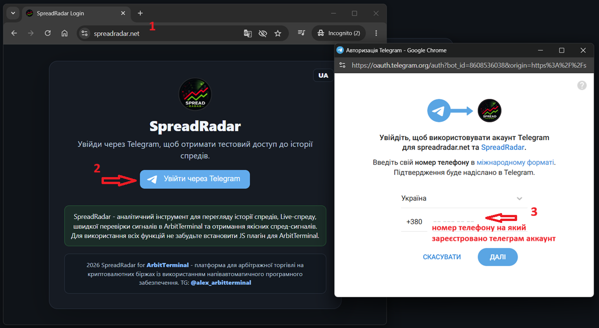
Покроково: як увійти в SpreadRadar через Telegram, встановити OrangeMonkey у Chrome, додати скрипт SpreadRadar Links v1.38 і перевірити його роботу в ArbitTerminal.
Перейдіть на сайт:
https://spreadradar.net
Натисніть кнопку «Увійти через Telegram».
У вікні Telegram введіть номер телефону, на який зареєстрований ваш Telegram-акаунт, і натисніть «Далі».

У Telegram прийде службове повідомлення з підтвердженням входу на spreadradar.net.
Натисніть «Підтвердити».
Якщо ви не робили цей запит — натисніть «Відхилити».
Після входу в SpreadRadar у верхній частині сторінки знайдіть кнопку завантаження скрипта:
SpreadRadar-Links-v1.38.txt
Натисніть по ній правою кнопкою мишки та виберіть Copy link address або Копіювати посилання.
Посилання має вигляд:
https://spreadradar.net/assets/SpreadRadar-Links-v1.38.txt
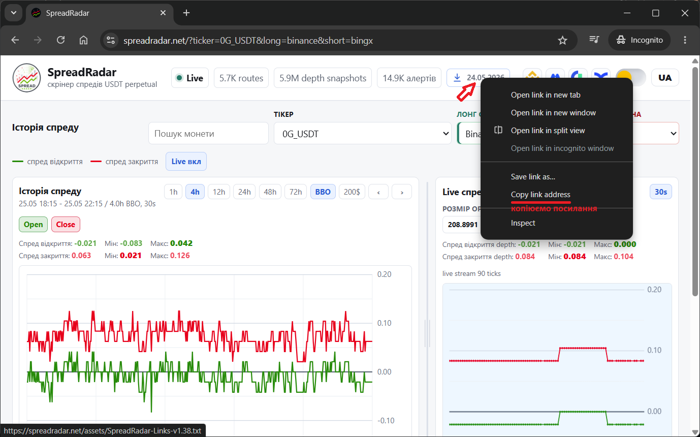
У Chrome відкрийте меню у правому верхньому куті ⋮.
Далі перейдіть:
Extensions → Visit Chrome Web Store
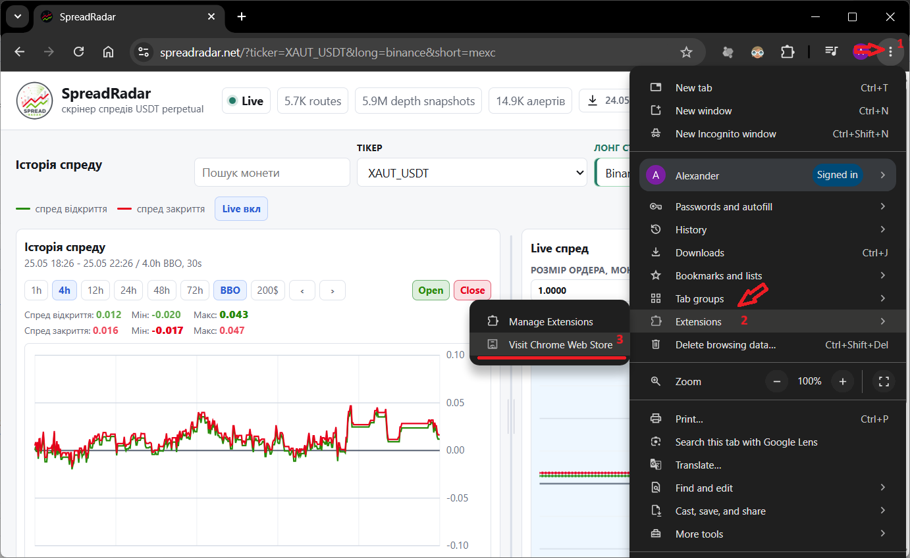
У пошуку Chrome Web Store введіть:
OrangeMonkey
У результатах виберіть розширення OrangeMonkey.
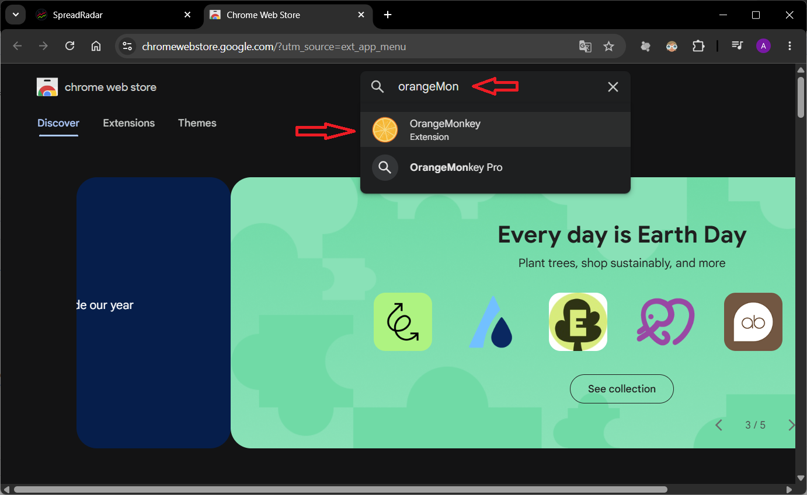
На сторінці OrangeMonkey натисніть Add to Chrome.
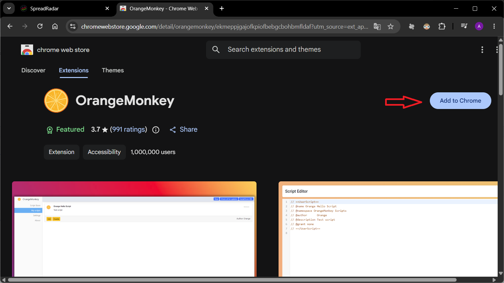
У вікні підтвердження натисніть Add extension.
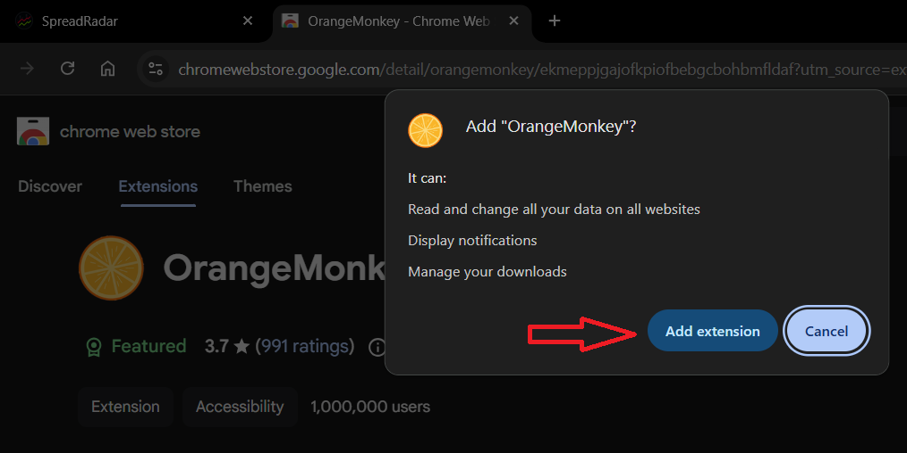
Після встановлення OrangeMonkey відкрийте сторінку налаштувань розширення.
Увімкніть Developer mode, потім увімкніть Allow User Scripts.
Це потрібно, щоб Chrome дозволив OrangeMonkey запускати користувацькі скрипти.
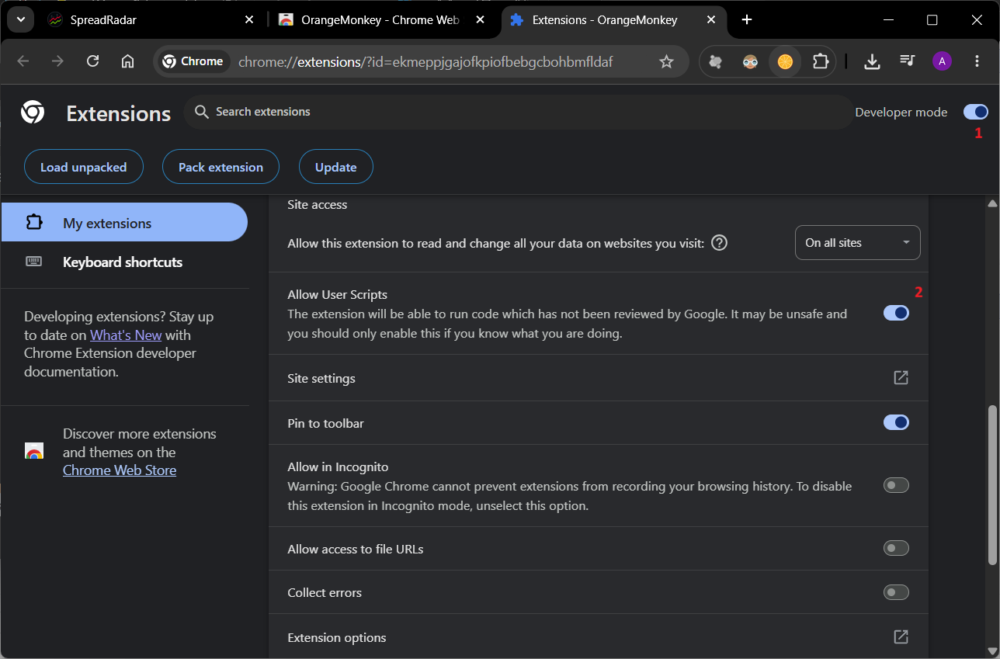
Натисніть іконку OrangeMonkey у верхній панелі браузера.
Потім натисніть іконку налаштувань ⚙.
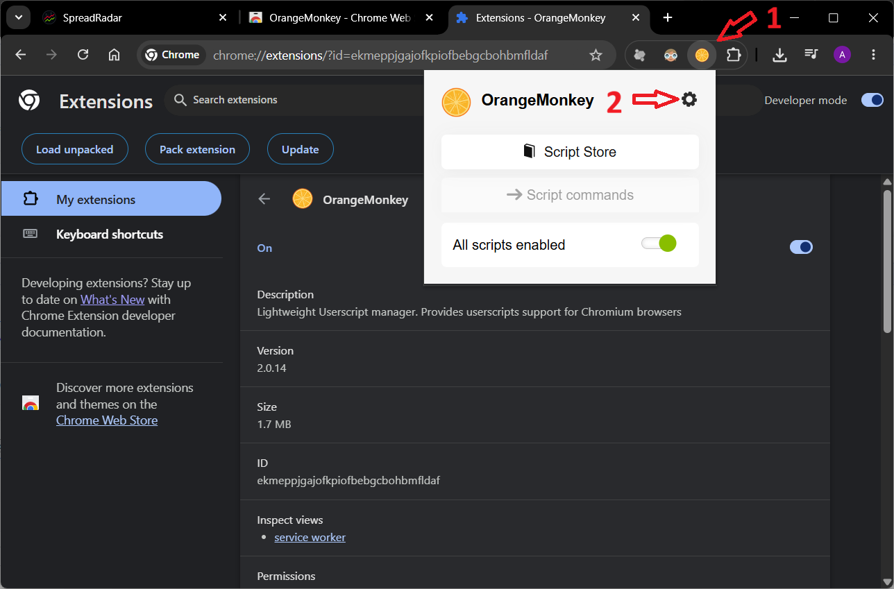
У меню OrangeMonkey відкрийте розділ My scripts.
Потім натисніть кнопку Install from URL.
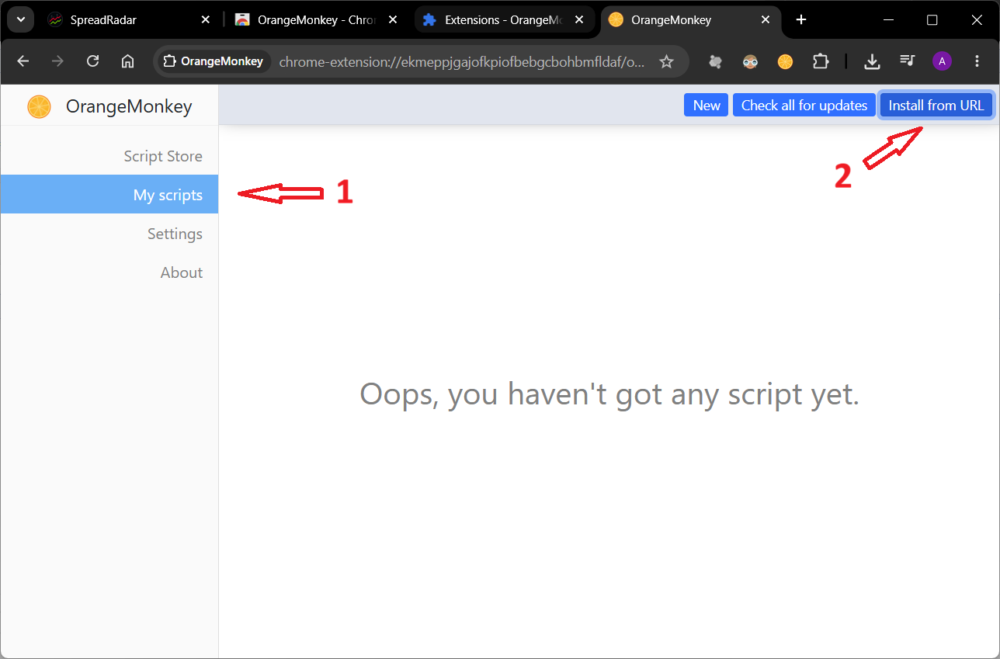
У поле Input URL вставте посилання:
https://spreadradar.net/assets/SpreadRadar-Links-v1.38.txt
Після цього натисніть OK.
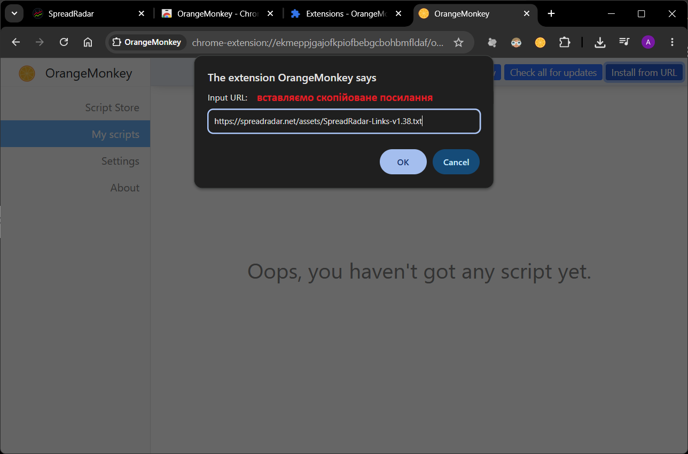
Відкриється сторінка встановлення скрипта.
Натисніть Confirm installation.
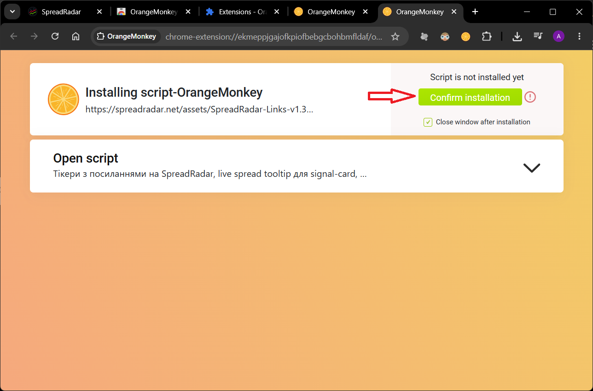
У списку My scripts має з’явитися скрипт:
ArbitTerminal: SpreadRadar Links
Версія:
v1.38-clean-fasttrade-reload
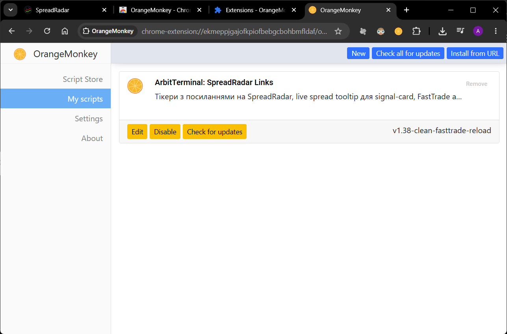
Перейдіть на сайт:
https://arbitterminal.online
або:
https://www.arbitterminal.online
Натисніть іконку OrangeMonkey.
Має бути увімкнено All scripts enabled і активний скрипт ArbitTerminal: SpreadRadar Links.
Після цього в ArbitTerminal має з’явитися зелена кнопка вибору order size, наприклад 300$.
Доступні варіанти:
100$ / 200$ / 300$ / 400$ / 500$
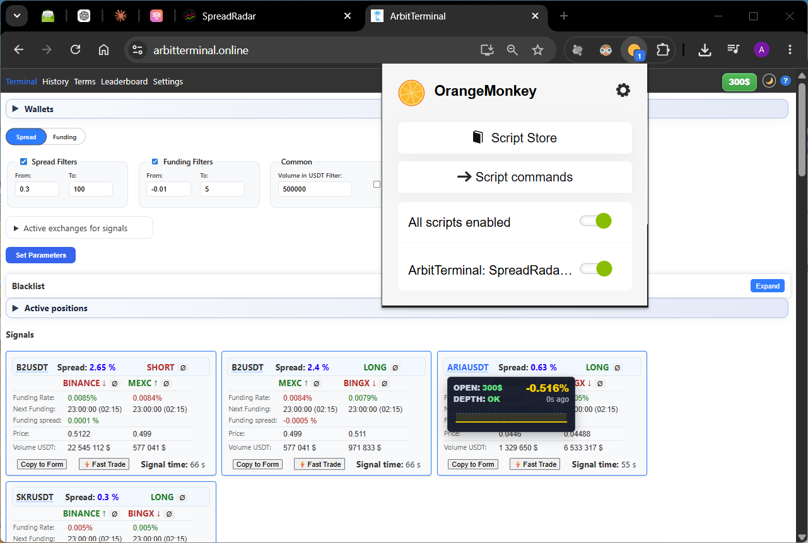
Наведіть курсор мишки на тікер у картці сигналу ArbitTerminal.
Має з’явитися підказка SpreadRadar з live-даними:
OPEN DEPTH: OK / NO міні-графік спреду
Якщо підказка з’явилась — скрипт встановлено правильно.
Перевірте:
Якщо tooltip показує, що потрібен логін або доступ — відкрийте https://spreadradar.net, увійдіть через Telegram і перевірте, що доступ активний.